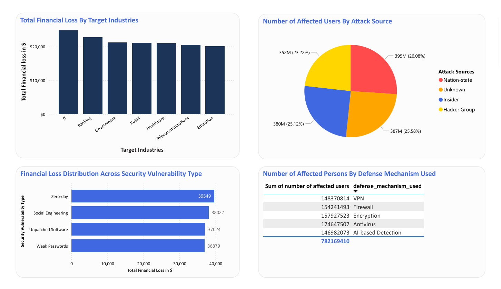
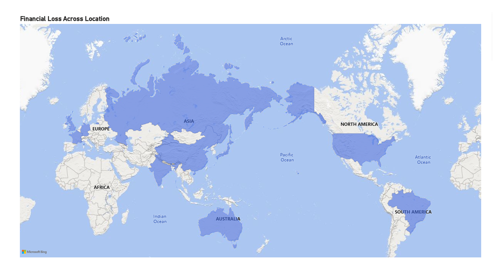

Cybersecurity Threat Case Study
Turning raw cybersecurity data into strategic insights and actionable recommendations for stronger defense and smarter decision-making.
Executive Summary
This project analyzed cybersecurity threat data to uncover attack patterns, financial losses, and user impact across industries.
After cleaning and transforming the dataset in Power BI, I built an interactive dashboard highlighting key KPIs: $151K financial loss, 3,000 incidents, and 2B affected users.
The analysis revealed that basic vulnerabilities (weak passwords, unpatched software) caused as much damage as advanced exploits. Banking and IT industries faced the highest financial losses, while nation-state actors emerged as the most dangerous attack source. Defense adoption was uneven—with antivirus widely used but AI detection underutilized.
The outcome translated into clear recommendations: strengthen patch management and password policies, increase investment in AI-powered detection, and prioritize risk-heavy industries like Banking and IT.
This case study demonstrates my ability to turn raw cybersecurity data into strategic insights and actionable recommendations for stronger defense and smarter decision-making.
Background
I developed a cybersecurity threat dashboard to uncover patterns in attacks, financial losses, and vulnerabilities across industries such as banking, IT, healthcare, and government. The dataset contained multiple dimensions—attack types, incident counts, user impact, sources, and defense mechanisms—which required careful preparation before insights could be derived.
Problem
Organizations across industries are experiencing a surge in cyberattacks, but many lack clear visibility into which threats cause the most damage, which vulnerabilities are being exploited, and how effective their defenses really are.
Without this understanding, financial losses and user exposure continue to rise unchecked.
Process
- Data Cleaning
- Imported raw cybersecurity data into Power BI.
- Removed duplicate records, corrected inconsistent attack type names, and handled missing values in financial loss and user counts.
- Data Transformation
- Built calculated columns and DAX measures (e.g., average loss per incident, percentage of users affected by source).
- Aggregated financial losses and user exposure across industries and vulnerabilities.
- Standardized metrics (billions for users, thousands for financial loss) for consistency.
- Data Modeling
- Linked tables across attack type, target industries, vulnerabilities, and defense mechanisms.
- Structured relationships enabled a single view of incidents across all dimensions.
- Visualization Design
- Designed KPI cards, bar charts, pie charts, and maps for clear storytelling.
- Applied a six-color complementary palette to highlight categories while maintaining professional readability.
Dashboard Highlights
Visual components



Key Insights
Over 2B users were impacted, with Phishing and DDoS as top threats; weak passwords and unpatched software drove major losses, Banking and IT were prime targets, nation-state actors led 26% of attacks, and AI detection gaps left critical blind spots despite strong antivirus adoption.
- High ExposureOver 2B users were impacted, with Phishing and DDoS among the top threats.
- Basic Vulnerabilities = Major LossesWeak passwords and unpatched software caused the highest financial losses (~$37K–$40K each).
- Industry TargetsBanking and IT suffered the greatest financial damage, highlighting their attractiveness to attackers.
- Attack SourcesNation-state actors were responsible for 26% of incidents, showcasing the scale of advanced persistent threats.
- Defense GapsWhile antivirus protected 174M users, AI detection tools were underutilized, creating blind spots.
Impact & Recommendations
- An insight-rich dashboardConverted fragmented, raw data into an insight-rich dashboard that highlights key risks and vulnerabilities.
- Everyday issues, real costExposed how everyday issues like weak passwords had financial impacts comparable to advanced exploits.
- Patching and authenticationRecommended stricter patch management policies and stronger authentication practices to reduce exposure.
- AI-powered detectionAdvocated for increased investment in AI-powered threat detection for real-time resilience.
- Industry-specific safeguardsSuggested industry-specific safeguards, particularly in Banking and IT, to address their high-risk exposure.
By framing the problem, analyzing the data, and recommending proactive security measures, I was able to highlight potential vulnerabilities, identify attack patterns, and deliver actionable insights that strengthen organizational defenses against future threats.
Have data that isn’t talking?
Tell us what you are trying to understand. We will reply with what we would look at first.
Work With Our Data Team bloomotive@tbmbrand.com